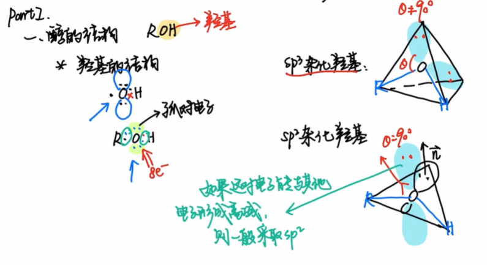
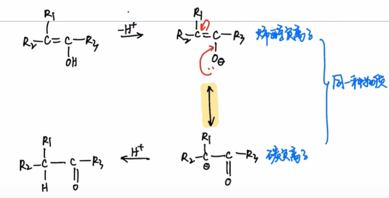
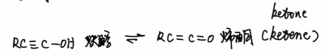
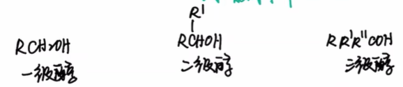
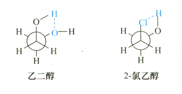
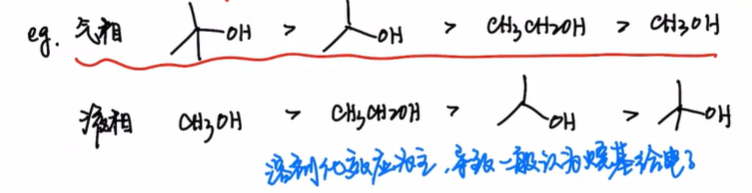
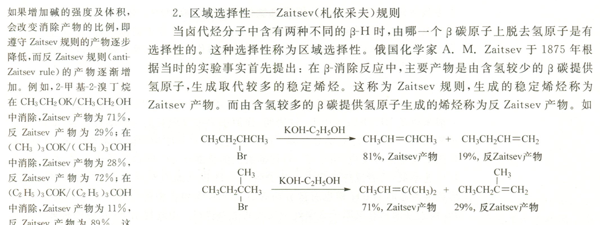
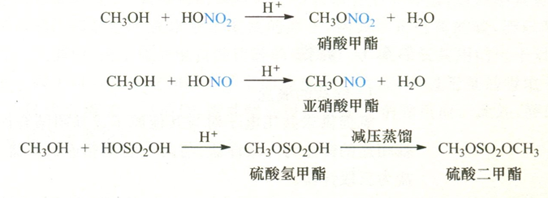
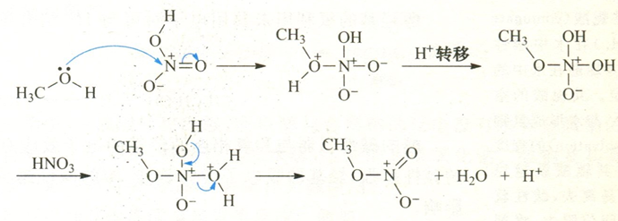
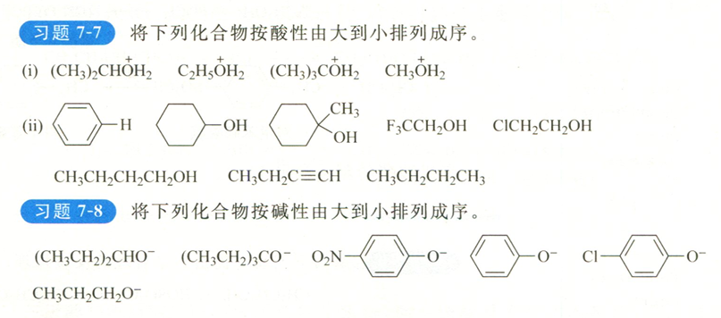

本文是【基础有机化学 L9-2 醇的基本性质，醇的酸碱性和亲核性，醇与无机酸的反应】 的笔记
PartI:醇的结构
根据八隅体规则,醇的结构为,其中O原子上有两对孤对电子.

受电子效应和空间位阻效应的影响,醇羟基氧的杂化方式可以为
苯酚
在苯酚中,O原子采取杂化,这样O的孤对电子可以与苯环形成共轭,造成电子离域,体系能量下降.
苯酚负离子
在烯醇负离子中,羟基氧同样因为共轭而采取杂化.

炔醇-烯酮

根据分类,醇可以分为一/二/三级醇.

物理性质
- 低级醇易溶,中级醇部分溶,高级醇不溶
- 同碳数,叉链醇的沸点低
- 低级醇的熔沸点比同碳数的烃更高
立体化学
对于乙二醇和2-氯乙醇,由于邻交叉式构象可以形成分子内氢键,降低构象能量,故主要以邻交叉式构象存在

PartII:醇的酸碱性
酸性
共轭碱越稳定,酸性越强.
根据醇分子的酸碱性顺序,可以得知基团的电子效应.
- 在液相中,烷基体现为给电子效应,不利于烷氧基负离子电荷分散. 这是由于烷基空阻大,影不利于烷氧基负离子的溶剂化.
- 在气相中,烷基体现为吸电子效应.

\由于有机反应大多在液相中进行,所以一般认为烷基是给电子基团.
常见醇盐及其用途
- :作为小位阻强碱,作为强亲核试剂
- :作为大位阻强碱,作为弱亲核试剂
进行卤代烃的β-消除反应时,大位阻强碱给出反Zaitsev产物,小位阻较弱碱给出Zaitsev产物

这是因为碱的体积和强度增大后，空间位阻较大的 β-H 不易受到进攻，而空阻小、酸性强的 β-H 更易反应。
异丙醇铝可以作为氧化还原反应的催化剂.
碱性/亲核性
醇羟基的氧原子上的孤对电子如果结合,则体现碱性.如果结合亲电试剂,则体现亲核性
同样由于液相溶剂化不利的原因,烷基的空阻会增强醇的共轭酸的酸性,也就是减弱醇的碱性.
醇可以与含氧无机酸(oxo inorganic acid)反应,失去一分子水,生成无机酸酯.

以醇和硝酸反应为例:反应遵循加成-消去机理

综合判断

7-7(i)2,3,1,4
(ii)7,4,5,1,2,3,6,8
7-8 2,1,6,4,5,3